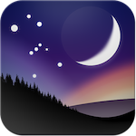
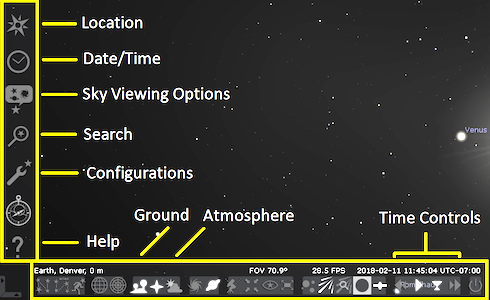
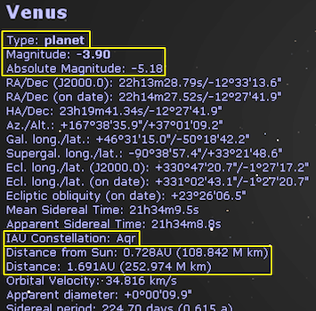
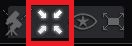
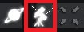

Stellarium is a free online planetarium that shows you objects in the night sky. Stellarium can help you learn about astronomy and locate objects in outer space.
When you open Stellarium, you will see a view of the ground and sky taking up the entire screen. This view represents a real-time model of the sky viewed from your current location.
The two main menus can be found b moving your mouse to the lower left corner of the screen.
When you click on an object in the sky, information about it will pop up on the upper left screen. You can gather important data from these pop-ups including: object type, current location, and distances. To deselect an object, right-click anywhere on the screen.
Since the Earth is always rotating, objects in the sky will appear to move when you zoom in very close. To automatically follow an object, use the Center on selected object button on the bottom menu.
The universe is full of motion, but much of it is too slow to see in real time. Stellarium can rewind, pause, and fast-forward time to speed up objects in the sky. Click the fast-forward and rewind buttons more times to speed them up even more. The down arrow button returns you to the current time and date.
When you speed up Stellarium using the Center button, you might find that the screen gets "wobbly" when you follow a specific object. To fix this, turn on the Equatorial mount button.

This makes your view follow in the same direction as the celestial sphere's rotation, so it will smoothly move with the sky.
If you find an object you want to explore later, you can use the Bookmark tool to save it. If you do not see the Bookmarks tool in the bottom menu, open the Configurations Window and go to the Tools tab. Check "Show bookmarks button" and look in the bottom menu for the added icon. This button opens the Bookmarks window where you can find, add, or remove saved objects. Simply select an object in the sky that you want to save and click "Add bookmark". Use the two checkboxes "Add date and time" and "Add location" if you want to go back to the exact time and location on Earth of your current observation. This is helpful if there is a specific astronomical event you want to save.
If you want to keep your bookmarks for another observing session, it may be best to "Export bookmarks" when you are finished for the day. Save them in your personal drive on the computer so that you can "Import bookmarks" back into Stellarium when you come back.
You will likely come across parts of the sky or specific objects that you want to capture in an image. Stellarium makes it easy to save and keep track of screenshots.
Direct Link: Stellarium Tutorial